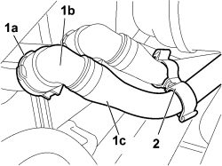
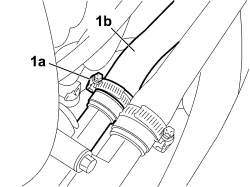

5010A16 HEATER WATER RETURN PIPE - R.R.
- Path
- Procedures > 50 AUXILIARY UNITS > 5010 CLIMATE CONTROL - MISCELLANEOUS > 5010A HEATER WATER PIPES > 5010A16 HEATER WATER RETURN PIPE - R.R.
- Kind
- repair procedure (removal / refitting; the operation number is the code)
- Applies to
- engines: 1.8; all production periods
- Interactive page
- https://sloeber94.github.io/elrnDB-fCrm/en/#/194003047
Applies to: engines: 1.8; all production periods
 Removing
Removing
 Refitting
Refitting- Position the vehicle on the lift.
Op. 7055B54 UNDER ENGINE PROTECTION/GUARD - R.R.
Op. 0010T20 ENGINE COOLANT - CHANGE
1. Withdraw retaining clip (1a) and undo quick-release fitting (1b) to disconnect the water return pipe (1c) from the attachment on the heater.
2. Undo the retaining clip to release the pipe from the connection clamp.

Applies to: engines: 1.8; all production periods
1. Loosen the fastening collar (1a) and disconnect return pipe (1b) from the thermostat case.
- Undo the retaining clips to release the pipe from the connection clamp and remove the pipe from the vehicle.

Applies to: engines: 1.8; all production periods
Refitting
Removing- Connect the return pipe to the thermostat unit and tighten the retaining band.
- Connect the pipe quick connector to the heater and do up the retaining clip.
- Fit the return pipe into the connection clamp
Op. 0010T20 ENGINE COOLANT - CHANGE
Op. 7055B54 UNDER ENGINE PROTECTION/GUARD - R.R.
Remove the vehicle from the lift.